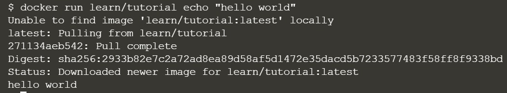
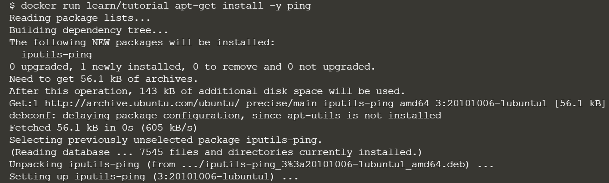
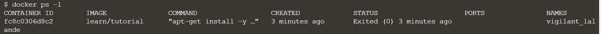
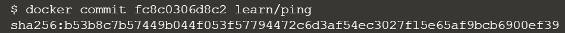
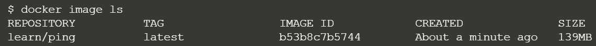
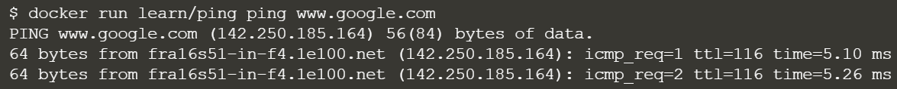

Docker
基本docker指令
2021/05/15
查看docker版本
docker --version
查詢映像檔
docker serach [關鍵字]> docker官方映像倉庫(Docker Hub Registry)的映象檔全名都是如下格式:
[username]/[repository]
下載映像檔
docker pull [映像檔名稱]
建立並啟動容器
docker run [映像檔名稱] [在容器中需要執行的命令]例:
docker run learn/tutorial echo "hello world"
修改容器
EX: 在容器中安裝工具ping :docker run learn/tutorial apt-get install -y ping( 在非互動模式下安裝套件，記得使用「 -y 」) 
建立新映像檔
將裝了ping套件的容器製作成映像檔 :顯示本機上最近建立的容器資訊:
docker ps -l 可以看到，這個容器的command為「apt-get install ping」，取他的id
提交新的映像檔
docker commit [本機的容器ID] [名字]例: 
製作成功 
使用新的映像檔 
查詢容器資訊
看到所有正在執行的容器:docker ps
看到單個容器詳細資訊:
docker inspect [容器ID (or ID的前3~4個字元)]
把新映像檔上傳倉庫
查看本機映像檔清單docker imagesor
docker image ls
把映像檔推送到Dockerhub
docker push [使用者名稱]/[映像檔名稱]
https://hub.docker.com/signup
在上面這個網址註冊Dockerhub帳號，使用docker login登入就可以做上傳操作